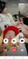
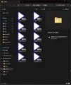

Journal · 2026-02-27
微信聊天记录
吉姆哈克 : 我感觉那网站，挺简陋的，应该可以便宜点吧 2026年2月27日 14:02 大宝 : 你发我下 2026年2月27日 14:02 吉姆哈克 : 我去拼多多中下载图片 2026年2月27日 14:03 吉姆哈克 : [图片] 2026年2月27日 14:03 吉姆哈克 : [图片] 2026年2月27日 14:03 吉姆哈克 : [图片] 2026年2月27日 14:03 吉姆哈克 : [图片] 2026年2月27日 14:03 吉姆哈克 : [图片] 2026年2月27日 14:03 吉姆哈克 : [图片] 2026年2月27日 14:03 吉姆哈克 : [图片] 2026年2月27日 14:03 吉姆哈克 : [图片] 2026年2月27日 14:03 吉姆哈克 : [图片] 2026年2月27日 14:03 吉姆哈克 : [图片] 2026年2月27日 14:03 吉姆哈克 : 找到了 2026年2月27日 14:04
吉姆哈克 : I get the feeling that website is pretty bare-bones, it ought to be cheaper 2026年2月27日 14:02 大宝 : Send it to me 2026年2月27日 14:02 吉姆哈克 : I'll go download images from Pinduoduo 2026年2月27日 14:03 吉姆哈克 : [图片] 2026年2月27日 14:03 吉姆哈克 : [图片] 2026年2月27日 14:03 吉姆哈克 : [图片] 2026年2月27日 14:03 吉姆哈克 : [图片] 2026年2月27日 14:03 吉姆哈克 : [图片] 2026年2月27日 14:03 吉姆哈克 : [图片] 2026年2月27日 14:03 吉姆哈克 : [图片] 2026年2月27日 14:03 吉姆哈克 : [图片] 2026年2月27日 14:03 吉姆哈克 : [图片] 2026年2月27日 14:03 吉姆哈克 : [图片] 2026年2月27日 14:03 吉姆哈克 : Found it 2026年2月27日 14:04
吉姆哈克 : J'ai l'impression que ce site est très rudimentaire, ça devrait être moins cher 2026年2月27日 14:02 大宝 : Envoie-le-moi 2026年2月27日 14:02 吉姆哈克 : Je vais télécharger des images sur Pinduoduo 2026年2月27日 14:03 吉姆哈克 : [图片] 2026年2月27日 14:03 吉姆哈克 : [图片] 2026年2月27日 14:03 吉姆哈克 : [图片] 2026年2月27日 14:03 吉姆哈克 : [图片] 2026年2月27日 14:03 吉姆哈克 : [图片] 2026年2月27日 14:03 吉姆哈克 : [图片] 2026年2月27日 14:03 吉姆哈克 : [图片] 2026年2月27日 14:03 吉姆哈克 : [图片] 2026年2月27日 14:03 吉姆哈克 : [图片] 2026年2月27日 14:03 吉姆哈克 : [图片] 2026年2月27日 14:03 吉姆哈克 : Trouvé 2026年2月27日 14:04
吉姆哈克 : Ich hab das Gefühl, diese Website ist ziemlich primitiv, das müsste günstiger gehen 2026年2月27日 14:02 大宝 : Schick es mir 2026年2月27日 14:02 吉姆哈克 : Ich lade mal Bilder von Pinduoduo herunter 2026年2月27日 14:03 吉姆哈克 : [图片] 2026年2月27日 14:03 吉姆哈克 : [图片] 2026年2月27日 14:03 吉姆哈克 : [图片] 2026年2月27日 14:03 吉姆哈克 : [图片] 2026年2月27日 14:03 吉姆哈克 : [图片] 2026年2月27日 14:03 吉姆哈克 : [图片] 2026年2月27日 14:03 吉姆哈克 : [图片] 2026年2月27日 14:03 吉姆哈克 : [图片] 2026年2月27日 14:03 吉姆哈克 : [图片] 2026年2月27日 14:03 吉姆哈克 : [图片] 2026年2月27日 14:03 吉姆哈克 : Gefunden 2026年2月27日 14:04
吉姆哈克 : 这是你的私人号啊 引用： 2026年2月27日 14:05 大宝 : 等这个就可以 引用：豪车kneeforyou a****** 2026年2月27日 14:05 大宝 : 需要验证？ 2026年2月27日 14:06 吉姆哈克 : 我就是登陆这个啊 2026年2月27日 14:06
吉姆哈克 : This is your personal account Quote: 2026年2月27日 14:05 大宝 : Wait for this one Quote: 豪车kneeforyou a****** 2026年2月27日 14:05 大宝 : Needs verification? 2026年2月27日 14:06 吉姆哈克 : This is exactly what I'm logging into 2026年2月27日 14:06
吉姆哈克 : C'est ton compte personnel Citation : 2026年2月27日 14:05 大宝 : Attends celui-ci Citation : 豪车kneeforyou a****** 2026年2月27日 14:05 大宝 : Une vérification nécessaire ? 2026年2月27日 14:06 吉姆哈克 : Mais c'est celui-ci que je connecte 2026年2月27日 14:06
吉姆哈克 : Das ist dein privates Konto Zitat: 2026年2月27日 14:05 大宝 : Warte auf das hier Zitat: 豪车kneeforyou a****** 2026年2月27日 14:05 大宝 : Braucht es eine Bestätigung? 2026年2月27日 14:06 吉姆哈克 : Genau das melde ich mich doch an 2026年2月27日 14:06
吉姆哈克 : 没有命名的照片，就只能一个一个地点开看 2026年2月27日 15:48 阿姐 : 你看看还有么 2026年2月27日 15:48
吉姆哈克 : Photos without names can only be opened one by one 2026年2月27日 15:48 阿姐 : See if there are more 2026年2月27日 15:48
吉姆哈克 : Les photos sans nom, on ne peut que les ouvrir une par une 2026年2月27日 15:48 阿姐 : Regarde s'il y en a d'autres 2026年2月27日 15:48
吉姆哈克 : Fotos ohne Namen kann man nur einzeln öffnen 2026年2月27日 15:48 阿姐 : Schau, ob es noch mehr gibt 2026年2月27日 15:48

吉姆哈克 : 漫漫姐姐的儿子（1到5） 2026年2月27日 15:50 吉姆哈克 : 还有好多都是你朋友圈里发的 引用：你看看还有么 2026年2月27日 15:50 吉姆哈克 : 2岁以前的照片，我自己拍的较少 2026年2月27日 15:51 吉姆哈克 : 你当时怎么这么肿，嘴巴肿得张不开了 引用： 2026年2月27日 15:51 阿姐 : 刚生完孩子水肿还没下去 2026年2月27日 15:52
吉姆哈克 : Sister Manman's son (1 to 5) 2026年2月27日 15:50 吉姆哈克 : A lot of the others are from your Moments too Quote: See if there are more 2026年2月27日 15:50 吉姆哈克 : Before age 2 I took relatively few photos myself 2026年2月27日 15:51 吉姆哈克 : Why were you so puffy then, your mouth was too swollen to open Quote: 2026年2月27日 15:51 阿姐 : The postpartum swelling hadn't gone down yet right after giving birth 2026年2月27日 15:52
吉姆哈克 : Le fils de sœur Manman (1 à 5) 2026年2月27日 15:50 吉姆哈克 : Beaucoup d'autres viennent aussi de tes Moments Citation : Regarde s'il y en a d'autres 2026年2月27日 15:50 吉姆哈克 : Avant 2 ans, j'ai pris assez peu de photos moi-même 2026年2月27日 15:51 吉姆哈克 : Pourquoi tu étais si gonflée à l'époque, la bouche trop enflée pour s'ouvrir Citation : 2026年2月27日 15:51 阿姐 : L'œdème post-partum n'était pas encore descendu juste après l'accouchement 2026年2月27日 15:52
吉姆哈克 : Schwester Manmans Sohn (1 bis 5) 2026年2月27日 15:50 吉姆哈克 : Viele andere sind auch aus deinen Moments Zitat: Schau, ob es noch mehr gibt 2026年2月27日 15:50 吉姆哈克 : Vor dem Alter von 2 hab ich selbst eher wenige Fotos gemacht 2026年2月27日 15:51 吉姆哈克 : Warum warst du da so geschwollen, der Mund ging vor Schwellung nicht auf Zitat: 2026年2月27日 15:51 阿姐 : Die Wochenbett-Schwellung war direkt nach der Geburt noch nicht zurückgegangen 2026年2月27日 15:52

阿姐 : 这是什么 2026年2月27日 22:49
阿姐 : What's this 2026年2月27日 22:49
阿姐 : C'est quoi 2026年2月27日 22:49
阿姐 : Was ist das 2026年2月27日 22:49
吉姆哈克 : 那么，这个免费的二维码呢？他要写多少个小时代码？ 引用：昨天那个他写了三个小时的代码[破涕为笑] 2026年2月27日 16:45 大宝 : 这个就不知道了 2026年2月27日 16:45 吉姆哈克 : 未来教育还是有良心的，还安排个真人给我讲题，就是偏要我扫二维码[汗][汗][汗] 引用：这个免费的你还花这么多下下来看[抠鼻] 2026年2月27日 16:47
吉姆哈克 : So for this free QR code, how many hours of code does he have to write? Quote: Yesterday's one took him three hours of code [破涕为笑] 2026年2月27日 16:45 大宝 : No idea about this one 2026年2月27日 16:45 吉姆哈克 : Weilai Education does have a conscience after all, even arranging a real person to explain problems to me, they just insist I scan a QR code [汗][汗][汗] Quote: You went to so much trouble to download this free one to look at [抠鼻] 2026年2月27日 16:47
吉姆哈克 : Alors pour ce QR code gratuit, il doit écrire combien d'heures de code ? Citation : Celui d'hier il a passé trois heures à coder [破涕为笑] 2026年2月27日 16:45 大宝 : Aucune idée pour celui-là 2026年2月27日 16:45 吉姆哈克 : Weilai Education a quand même une conscience, on m'a même assigné une vraie personne pour m'expliquer, mais il faut absolument que je scanne un QR code [汗][汗][汗] Citation : Tu t'es donné tant de mal pour télécharger ce truc gratuit [抠鼻] 2026年2月27日 16:47
吉姆哈克 : Und bei diesem kostenlosen QR-Code, wie viele Stunden Code muss er schreiben? Zitat: Das von gestern hat er drei Stunden Code gebraucht [破涕为笑] 2026年2月27日 16:45 大宝 : Bei dem hier weiß ich nicht 2026年2月27日 16:45 吉姆哈克 : Weilai Bildung hat ja doch ein Gewissen, stellt mir sogar einen echten Menschen zum Erklären, muss nur partout einen QR-Code scannen [汗][汗][汗] Zitat: Du gibst dir so viel Mühe, das kostenlose Ding herunterzuladen [抠鼻] 2026年2月27日 16:47
吉姆哈克 : 我个人的时间和空间，都是很稀缺的，很难“开源”的，只能“节流” 2026年2月27日 16:48 吉姆哈克 : 我把github当作自己的免费无限制的网盘用了，在上面建了80多个仓库，其中有60多个是存照片的 引用： （调试输出省略） 2026年2月27日 16:49 吉姆哈克 : 所以，当我遇到“浪费时间和空间”的麻烦问题时，才会到处寻求技术大佬的帮助 2026年2月27日 16:50 吉姆哈克 : 所以，100好不好？ 引用：差不多下来六七十了 2026年2月27日 16:50 吉姆哈克 : 主要原因，应该是你们不好卖课吧？[坏笑][坏笑][坏笑] 引用：这个免费的你还花这么多下下来看[抠鼻] 2026年2月27日 16:51 大宝 : 可以 2026年2月27日 16:53 吉姆哈克 : 我又不急，也没要大佬们熬夜呀？如果要写三个小时，那就安排三天写呗，每天一个小时 引用：昨天那个他写了三个小时的代码[破涕为笑] 2026年2月27日 16:53 大宝 : 差不多，不好卖，做了没啥价值 引用：主要原因，应该是你们不好卖课吧？[坏笑][坏笑][坏笑] 2026年2月27日 16:53
吉姆哈克 : My personal time and space are both very scarce, hard to "open the source", I can only "throttle the flow" 2026年2月27日 16:48 吉姆哈克 : I use GitHub as my own free unlimited cloud drive, with over 80 repos on it, more than 60 of which store photos Quote: (debug output omitted) 2026年2月27日 16:49 吉姆哈克 : That's why, whenever I hit a troublesome problem that "wastes time and space", I go around seeking help from tech gurus 2026年2月27日 16:50 吉姆哈克 : So, how about 100? Quote: It comes to roughly 60-70 2026年2月27日 16:50 吉姆哈克 : The main reason is probably that you have trouble selling courses, right? [坏笑][坏笑][坏笑] Quote: You went to so much trouble to download this free one to look at [抠鼻] 2026年2月27日 16:51 大宝 : Fine 2026年2月27日 16:53 吉姆哈克 : I'm in no rush, and I didn't ask the gurus to pull all-nighters? If it takes three hours to write, just spread it over three days, an hour a day Quote: Yesterday's one took him three hours of code [破涕为笑] 2026年2月27日 16:53 大宝 : More or less, hard to sell, little point in making it Quote: The main reason is probably that you have trouble selling courses, right? [坏笑][坏笑][坏笑] 2026年2月27日 16:53
吉姆哈克 : Mon temps et mon espace personnels sont tous deux très rares, difficiles à « ouvrir la source », je ne peux que « couper le flux » 2026年2月27日 16:48 吉姆哈克 : Je me sers de GitHub comme d'un cloud gratuit et illimité, j'y ai créé plus de 80 dépôts dont plus de 60 pour stocker des photos Citation : (sortie de débogage omise) 2026年2月27日 16:49 吉姆哈克 : C'est pourquoi, quand je rencontre un problème embêtant qui « gaspille temps et espace », je vais chercher de l'aide auprès de gourous de la technique 2026年2月27日 16:50 吉姆哈克 : Alors, 100 ça va ? Citation : Ça fait à peu près 60-70 2026年2月27日 16:50 吉姆哈克 : La raison principale, c'est sûrement que vous avez du mal à vendre vos cours ? [坏笑][坏笑][坏笑] Citation : Tu t'es donné tant de mal pour télécharger ce truc gratuit [抠鼻] 2026年2月27日 16:51 大宝 : D'accord 2026年2月27日 16:53 吉姆哈克 : Je suis pas pressé, et j'ai pas demandé aux gourous de faire des nuits blanches ? Si ça prend trois heures à écrire, étalons sur trois jours, une heure par jour Citation : Celui d'hier il a passé trois heures à coder [破涕为笑] 2026年2月27日 16:53 大宝 : Plus ou moins, dur à vendre, pas grand intérêt à le faire Citation : La raison principale, c'est sûrement que vous avez du mal à vendre vos cours ? [坏笑][坏笑][坏笑] 2026年2月27日 16:53
吉姆哈克 : Meine persönliche Zeit und mein Speicher sind beide knapp, schwer an der „Quelle zu öffnen“, ich kann nur „den Fluss drosseln“ 2026年2月27日 16:48 吉姆哈克 : Ich nutze GitHub als mein eigenes kostenloses, unbegrenztes Cloud-Laufwerk, mit über 80 Repos, davon mehr als 60 für Fotos Zitat: (Debug-Ausgabe ausgelassen) 2026年2月27日 16:49 吉姆哈克 : Deshalb suche ich bei lästigen Problemen, die „Zeit und Speicher verschwenden“, überall Hilfe bei Technik-Koryphäen 2026年2月27日 16:50 吉姆哈克 : Also, wie wär's mit 100? Zitat: Kommt auf etwa 60-70 2026年2月27日 16:50 吉姆哈克 : Der Hauptgrund ist wohl, dass sich eure Kurse schlecht verkaufen, oder? [坏笑][坏笑][坏笑] Zitat: Du gibst dir so viel Mühe, das kostenlose Ding herunterzuladen [抠鼻] 2026年2月27日 16:51 大宝 : Geht 2026年2月27日 16:53 吉姆哈克 : Ich hab es nicht eilig und hab die Koryphäen auch nicht zu Nachtschichten verdonnert? Wenn es drei Stunden dauert, verteilen wir es auf drei Tage, eine Stunde täglich Zitat: Das von gestern hat er drei Stunden Code gebraucht [破涕为笑] 2026年2月27日 16:53 大宝 : Schon möglich, schlecht verkäuflich, wenig Wert, es zu machen Zitat: Der Hauptgrund ist wohl, dass sich eure Kurse schlecht verkaufen, oder? [坏笑][坏笑][坏笑] 2026年2月27日 16:53
吉姆哈克 : 找到了8个跟“甘凳凳”有关的视频 2026年2月27日 22:50 阿姐 : 我看看 2026年2月27日 22:50 吉姆哈克 : 从小就是“褐发白容”，应该是褐发，不是黄头毛 2026年2月27日 22:51 吉姆哈克 : 这个视频里的肚子，像是啤酒肚，有点像是P的 引用： 2026年2月27日 22:52
吉姆哈克 : Found 8 videos related to "Gandengdeng" 2026年2月27日 22:50 阿姐 : Let me see 2026年2月27日 22:50 吉姆哈克 : Since childhood it's been "brown hair, fair face", should be brown hair, not yellow hair 2026年2月27日 22:51 吉姆哈克 : The belly in this video looks like a beer belly, kind of looks photoshopped Quote: 2026年2月27日 22:52
吉姆哈克 : Trouvé 8 vidéos liées à « Gandengdeng » 2026年2月27日 22:50 阿姐 : Je regarde 2026年2月27日 22:50 吉姆哈克 : Depuis tout petit c'est « cheveux bruns, teint clair », ça devrait être brun, pas des cheveux jaunes 2026年2月27日 22:51 吉姆哈克 : Le ventre dans cette vidéo ressemble à un ventre à bière, un peu comme s'il était retouché Citation : 2026年2月27日 22:52
吉姆哈克 : 8 Videos zu „Gandengdeng“ gefunden 2026年2月27日 22:50 阿姐 : Zeig mal 2026年2月27日 22:50 吉姆哈克 : Von klein auf „braunes Haar, heller Teint“, müsste braunes Haar sein, kein gelbes Haar 2026年2月27日 22:51 吉姆哈克 : Der Bauch in diesem Video sieht nach Bierbauch aus, irgendwie wirkt er gephotoshoppt Zitat: 2026年2月27日 22:52